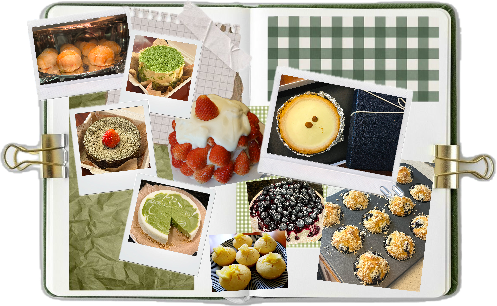
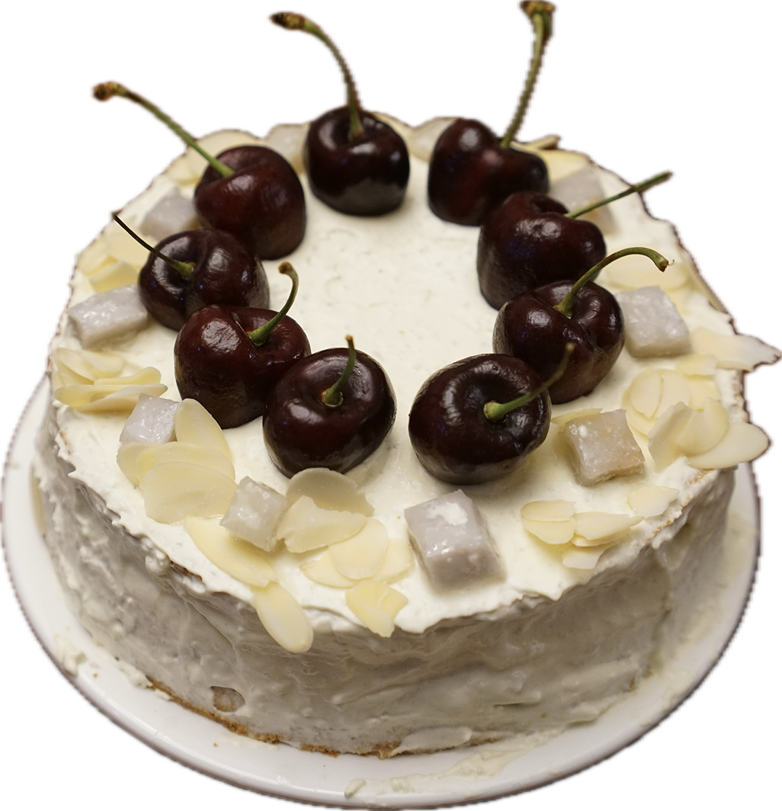
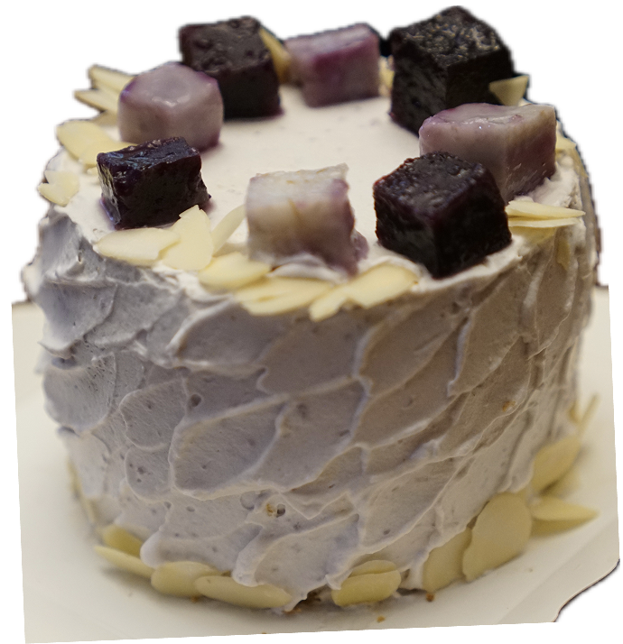
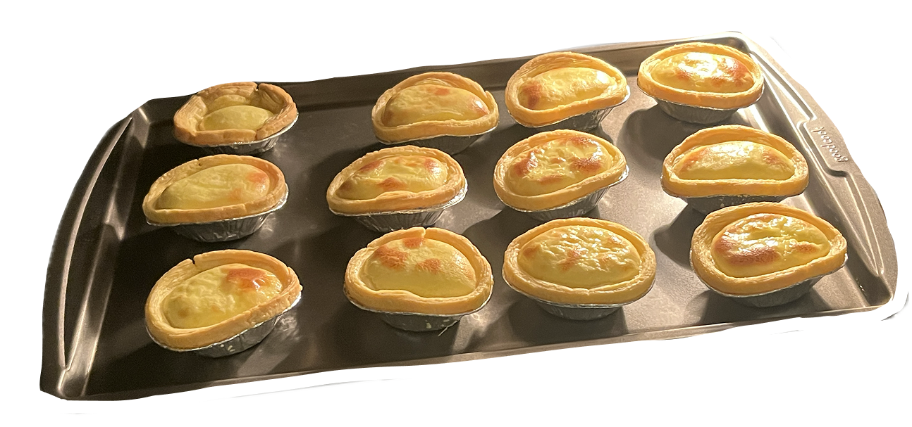

Baking is one of the ways I create for people I care about. I love hosting, making cakes for friends’ birthdays, and turning small celebrations into something warmer and more personal. I like the process of shaping something from scratch and sharing it with others.



